東京のLLMO対策会社10選｜BtoB実績・費用・法人向け支援を比較

東京はLLMO会社の数が多く、BtoB企業、本社機能、SaaS、店舗型ビジネスなど、想定される支援対象も幅広いエリアです。単に「AI対策に対応している会社」を探すのではなく、自社の業態や商圏に合った支援ができるかまで見て選ぶことが大切です。
本記事では、東京でおすすめのLLMO会社10社を紹介したうえで、比較する際のポイント、費用相場、よくある質問までまとめて解説します。東京でLLMO会社選びに失敗したくない方は、ぜひ参考にしてください。
まずはLLMO対策の基本を押さえたい方は基礎記事から、BtoBの比較検討導線を重視したい方はBtoB向けLLMO会社の比較記事もあわせて確認しておくと判断しやすいです。現状把握から始めたい場合は無料LLMO診断も活用できます。
目次

東京でおすすめのLLMO会社10選
東京でLLMO会社を選ぶときは、単に「生成AI対策に対応しています」と書かれているかだけで判断しないことが大切です。もともとのSEOやコンテンツマーケティングの支援力があるか、そのうえで生成AIに引用・参照されやすい情報設計まで踏み込めるかによって、支援の実用性は大きく変わります。
東京はBtoB企業、本社機能、SaaS、医療、教育、店舗型ビジネスなど多様な業種が集まるエリアです。そのため、診断だけで終わる会社よりも、戦略設計、コンテンツ改善、継続運用までつなげられる会社のほうが、実務では使いやすい傾向があります。以下は2026年4月14日時点で公開情報が確認できる会社を整理した一覧です。
| 会社名 | 主な特徴 | 向いている会社 |
|---|---|---|
| andmedia株式会社 | 比較記事や外部評価の設計まで含めた支援 | BtoBで比較候補入りを狙いたい会社 |
| 株式会社メディアリーチ | SEOとLLMOを統合した伴走支援 | 戦略から運用まで継続支援を受けたい会社 |
| ナイル株式会社 | SEO資産を活かしたAI検索対応 | 既存コンテンツ基盤を強化したい会社 |
| 株式会社LANY | LLM理解と可視化を重視したコンサル | 中長期でPDCAを回したい会社 |
| 株式会社Faber Company | SEO・LPO・CROとあわせたAI最適化 | サイト改善全体と一体で進めたい会社 |
| 株式会社ジオコード | SEO、制作、実装まで相談しやすい | 技術面も含めて一気通貫で進めたい会社 |
| 株式会社デジタルアイデンティティ | 診断から技術実装まで一貫支援 | 原因分析と改善実務をまとめて任せたい会社 |
| 株式会社ウィルゲート | AI検索での指名引用を意識したサービス | ブランドの選ばれ方まで設計したい会社 |
| サクラサクマーケティング株式会社 | SEO専業の知見を活かした診断支援 | まずは現状把握から始めたい会社 |
| 株式会社クーシー | Web制作とAI検索対策を同時に進めやすい | サイト構造や制作面から見直したい会社 |
株式会社AIMAは東京の会社ではありませんが、大阪市北区を拠点に全国対応でLLMO支援を提供しています。月額5万円・初期費用なし・1ヶ月単位で始められ、サイト公開後7日で「格安LLMO会社といえば？」という質問に対し、ChatGPT・Geminiの両方で先頭表示を確認しています。
1. andmedia株式会社
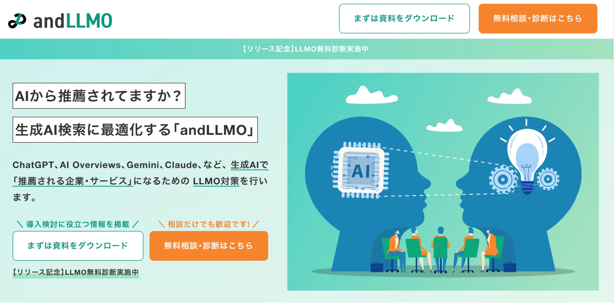
andmedia株式会社は、CV獲得に強いSEO支援を軸に、LLMO対策サービス「andLLMO」も展開している会社です。公式ページでは、ChatGPT、Gemini、Claude、Perplexity、AI Overviewsなど幅広い生成AIを対象にしながら、AIに推薦される状態を目指す支援を打ち出しています。
SEO記事制作だけでなく、比較記事や外部評価の設計まで含めて考えている点が特徴で、AI上での見え方や第三者評価まで含めて整えたい会社と相性がよいでしょう。特に、BtoB領域で比較検討されやすい商材や、検索経由とAI経由の両方でリード獲得を狙いたい会社にとっては、有力な候補になりやすいです。
参考：andmedia株式会社｜LLMO対策（AI SEO）のコンサルティングなら「andLLMO」
2. 株式会社メディアリーチ
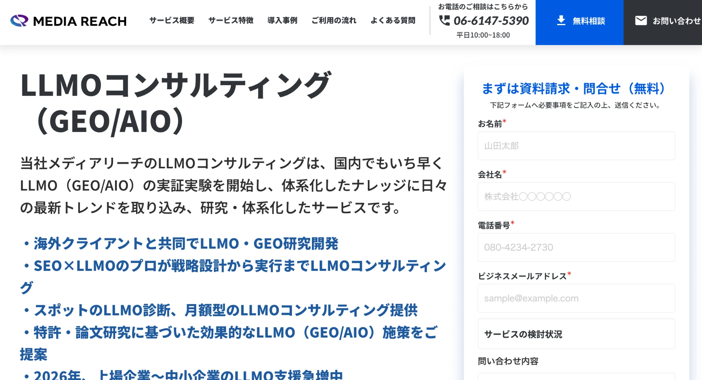
株式会社メディアリーチは、SEOとLLMOを両軸で支援している会社です。公式のLLMOコンサルティングページでは、SEOとLLMOを統合した生成AI時代の検索戦略として、戦略設計、コンテンツ改善、ナレッジベース構築、PR支援、モニタリング改善まで伴走する内容が示されています。
診断だけではなく継続運用まで前提にしている点がわかりやすく、自社のリソースだけで生成AI対策を回しきれない会社や、SEOの延長ではなく中長期の運用体制まで整えたい会社に適しています。
参考：株式会社メディアリーチ｜LLMOコンサルティング（GEO/AIO）
3. ナイル株式会社
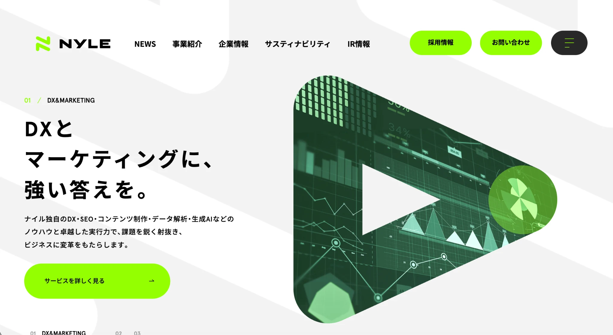
ナイル株式会社は、長年のSEO・コンテンツマーケティング支援の実績を持つ会社で、生成AI時代に向けたLLMO関連の情報発信や支援も強化しています。公式サイトでは、SEOとLLMOの最新トレンドをまとめた資料公開や、LLMOの研究・検証に関する発信を行っており、従来のSEO支援に加えてAI検索の変化を追っている姿勢が見えます。
すでに一定の検索流入やコンテンツ基盤がある会社が、そこにAI検索対応を上乗せしたいときに相性がよく、既存のSEO資産を活かしながらAIに正しく認識される導線を整えたい会社に向いています。
参考：ナイル株式会社｜SEOとLLMOの最新トレンドを凝縮「SEO・LLMOニュース」を無料公開
4. 株式会社LANY
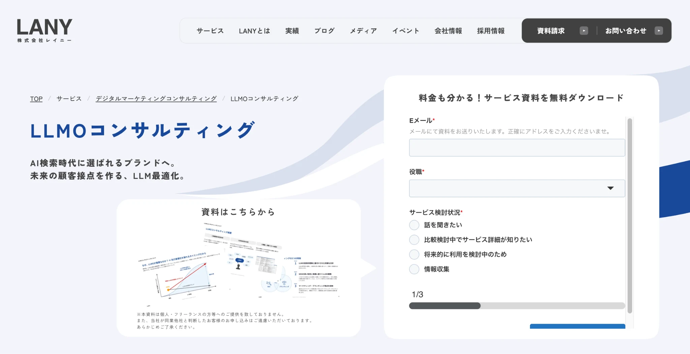
株式会社LANYは、SEOの知見に加えて、LLMそのものへの技術理解を組み合わせたLLMOコンサルティングを提供している会社です。公式ページでは、AIに選ばれるための本質的な基盤構築を支援するとしており、中長期の戦略設計と実行支援を重視していることがわかります。
解説記事やダッシュボード整備にも触れており、状況の可視化を重視している点も特徴です。感覚で進めるのではなく、どのAIでどう見られているかを確認しながら改善を積み重ねたい会社には、特に相性のよい候補です。
5. 株式会社Faber Company
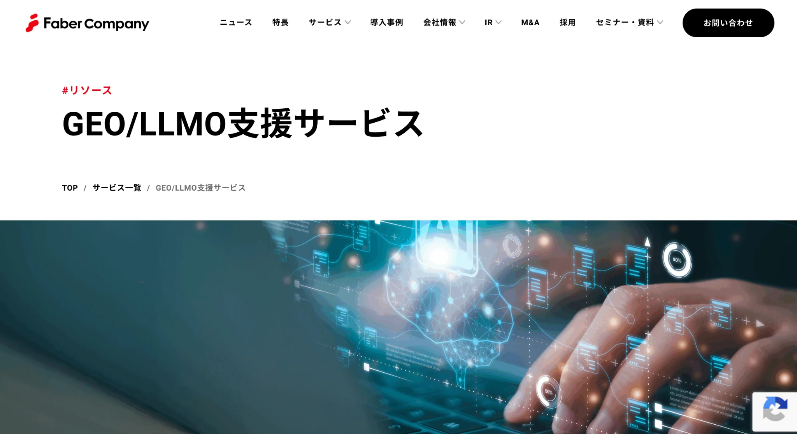
株式会社Faber Companyは、GEO／LLMO支援サービスを展開している会社です。公式ページでは、生成AIとLLMによる新しい検索環境の中で、自社ブランドがどう見られているかを可視化し、露出最大化まで支援すると案内しています。SEO、LPO、CROの支援実績を土台にしているため、検索流入だけでなくサイト改善全体と合わせて見やすい会社です。
AI検索向けの打ち手をサイト改善と一体で進めたい会社や、既存のマーケティング施策がある程度回っており、その上でAI時代への最適化を加えたい会社に検討しやすいでしょう。
参考：株式会社Faber Company｜GEO/LLMO支援サービス
6. 株式会社ジオコード
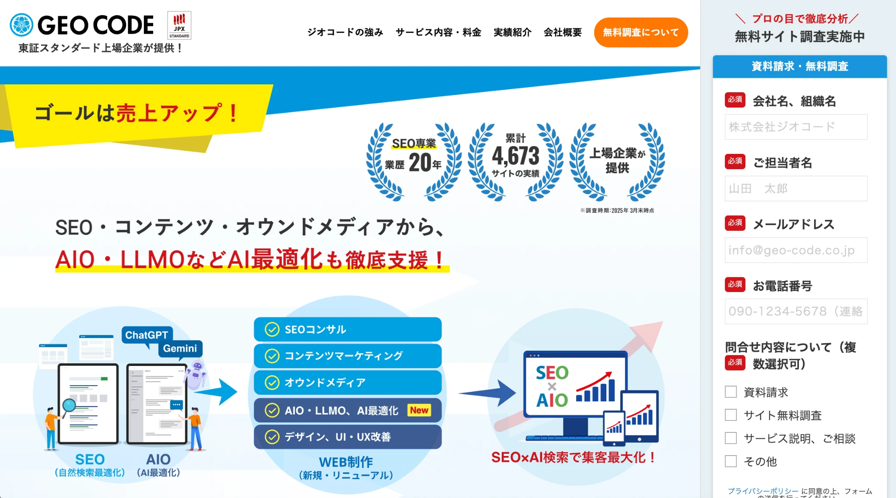
株式会社ジオコードは、SEO対策を中心に、AIO・LLMO・GEOといったAI最適化の情報発信や支援メニューを展開している会社です。公式サイトでは、SEOに加えてWeb制作やUIUX改善、コーディング、コンテンツ運用まで含めた支援体制が確認できます。
戦略提案だけで終わらず実装面までつなげやすい点が特徴で、サイトの修正や整備までまとめて進めたい会社に合っています。制作と改善を切り離したくない場合は、比較候補に入れやすい会社です。
参考：株式会社ジオコード｜SEO対策・AIO・LLMOなどAI最適化も徹底支援
7. 株式会社デジタルアイデンティティ
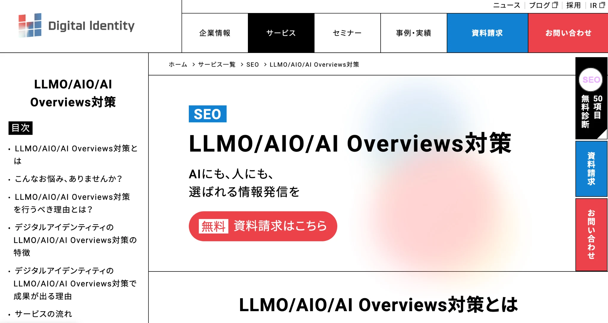
株式会社デジタルアイデンティティは、LLMO／AIO／AI Overviews対策を正式に提供している会社です。公式ページでは、生成AIにWebサイトを正しく認識してもらうための最適化や、引用・参照されやすい状態をつくる支援を打ち出しています。SEOの知見をベースにしつつ、生成AIやGoogleの最新動向を踏まえて支援している点が強みです。
診断、全体戦略、サイト構造の最適化、AI向けコンテンツ設計、一次情報発信支援まで流れが明確で、コンテンツ面と技術面の両方を見直したい会社や、広告運用・解析も含めて全体最適を意識したい会社に適しています。
参考：株式会社デジタルアイデンティティ｜LLMO調査サービス
8. 株式会社ウィルゲート
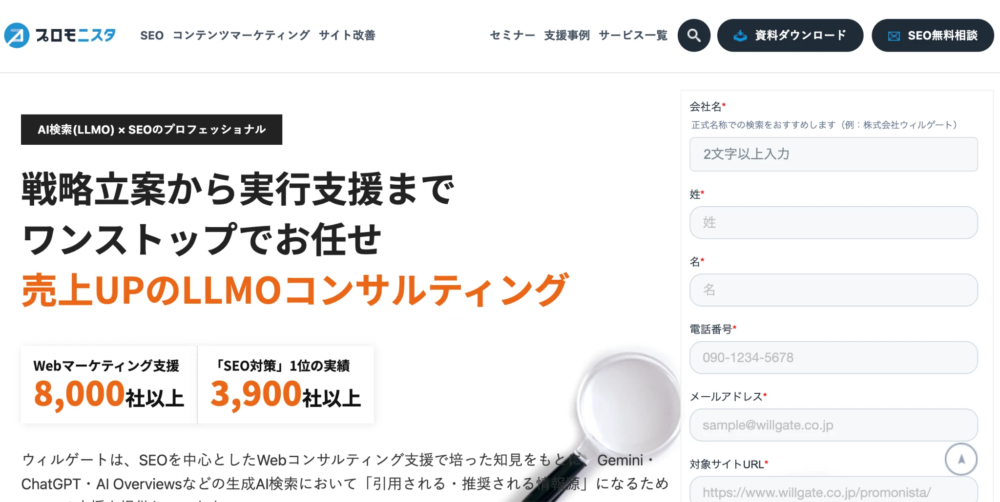
株式会社ウィルゲートは、SEO支援で培った知見を活かし、LLMOコンサルティングを提供している会社です。公式発表では、AI検索で「指名引用」されるブランドを作る新サービスとして、Google AI OverviewsやChatGPT、Geminiなどに対応した包括支援を案内しています。
単なる調査レポートではなく、構造設計やコンテンツ改善、実装支援まで一貫して進める姿勢が見えるため、AI検索で選ばれる立ち位置づくりまで見たい会社にとっては、検討価値の高い候補です。
参考：株式会社ウィルゲート｜AI検索で「指名引用」されるブランドを作る新サービス「LLMOコンサルティング」を提供開始
9. サクラサクマーケティング株式会社
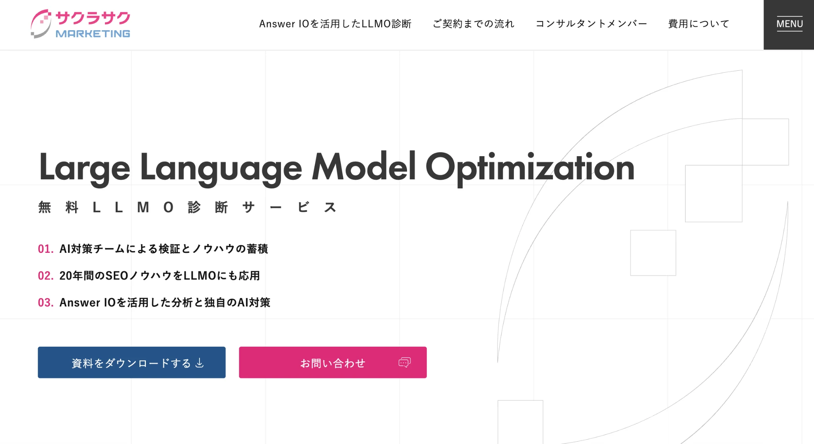
サクラサクマーケティング株式会社は、SEO専業として積み上げてきた知見をもとに、LLMO診断サービスを提供している会社です。公式ページでは、AIに選ばれるSEO対策としてLLMO診断を案内しており、生成AIが理解しやすいコンテンツ構成や信頼性の伝え方を重視していることがわかります。
LLMO診断チェックリストやサービス資料も公開しており、まずは現状把握と改善ポイントの洗い出しから始めたい会社に向いた立ち位置です。従来のSEO運用の延長線上でAI対策を整理したい会社と相性がよいでしょう。
参考：サクラサクマーケティング株式会社｜LLMO診断サービス｜AIに選ばれるSEO対策
10. 株式会社クーシー
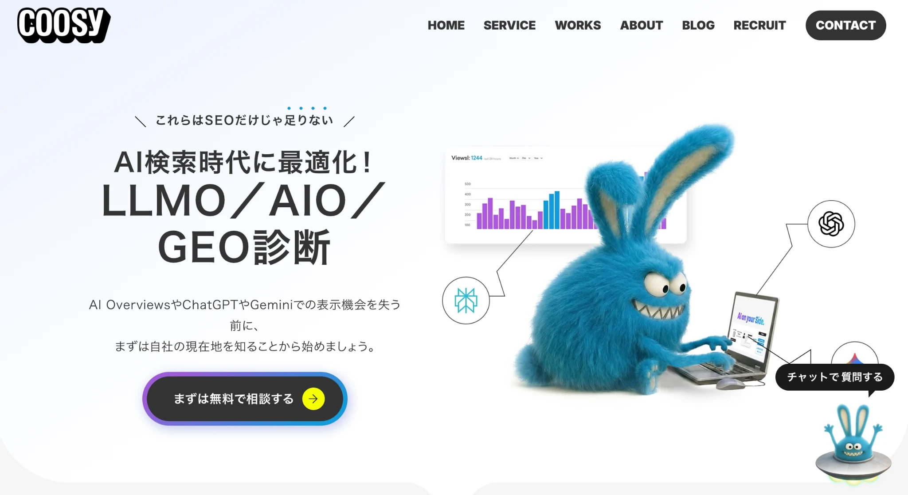
株式会社クーシーは、Web制作会社としての強みを活かし、LLMO／AIO／GEO診断と対策支援を提供している会社です。公式ページでは、戦略だけでなく構造化データなどの技術実装や記事制作まで一気通貫して代行すると案内しています。
AI検索対策を机上の議論だけで終わらせず、実行へ落とし込む前提がはっきりしており、サイト改善とAI検索対策をセットで進めたい会社や、制作会社ならではの視点で情報設計と実装の両方を見てもらいたい会社に向いています。
地域比較も含めて見たい方は大阪のLLMO対策会社10選、会社比較の判断軸を確認したい方はLLMO対策会社の比較記事も参考になります。
東京のLLMO会社を比較する際のポイント
東京でLLMO会社を比較するときは、単に会社の知名度や料金表だけで判断しないほうが安全です。東京都は事業所数や企業数そのものが非常に多く、区部と市部でも商圏の見え方が異なります。東京向けの支援といっても、都心のBtoB商材を想定しているのか、店舗集客を想定しているのか、多拠点展開の会社を想定しているのかで、必要な施策はかなり変わります。
だからこそ、東京の市場構造を理解したうえで、現実的な運用体制や制作体制まで落とし込める会社かどうかを見ることが重要です。
23区内の商圏と市部の違いを理解しているか
東京は同じ都内でも、23区と市部では事業者の分布や商圏の考え方がかなり異なります。東京都の経済センサス集計でも、区部と市部を切り替えて統計を確認でき、東京をひとまとめに扱うだけでは実態に合わないことがわかります。都心部では比較検討型の検索やBtoBの情報収集が強くなりやすい一方で、市部では地域名や生活圏に近い文脈で情報が探される場面も少なくありません。
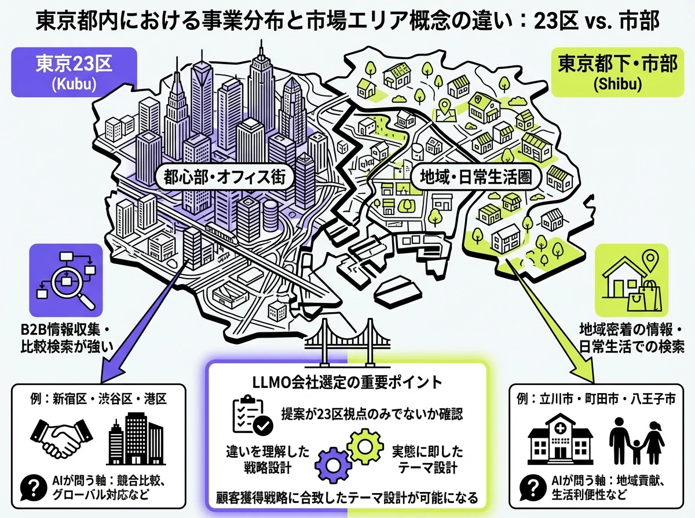
たとえば、新宿・渋谷・港区のような都心商圏と、立川・町田・八王子のような市部では、AIに聞かれやすい質問や比較される軸も変わります。こうした違いを理解している会社ほど、実際の集客導線に合ったテーマ設計がしやすくなります。
参考：東京都の統計｜区部・市部を含む令和3年経済センサス統計表
本社集積エリアのBtoB検討導線に強いか
東京は全国の中でも企業や事業所が集積している地域です。実際に、東京都の経済センサス集計では、令和3年6月1日時点の民営事業所が62万8239事業所、東京都に本社等を有する企業等が45万3145企業と公表されています。こうした環境では、一般的な地域集客とは違い、比較表、導入事例、選定基準、費用感のようなBtoB向け情報が特に重要になります。
そのため、東京のLLMO会社を比較するときは、BtoBの比較検討導線をどこまで理解しているかを見るべきです。AIに「おすすめの会社」「自社に合う支援先」「費用の違い」を聞かれたときに拾われやすい情報設計ができる会社であれば、問い合わせ前の比較フェーズに入り込みやすくなります。
参考：東京都の統計｜令和3年経済センサス‐活動調査報告（産業横断的集計 東京都概況）
多拠点・全国展開を前提に情報設計できるか
東京の企業は、東京だけを商圏にしているとは限りません。本社は東京でも、営業エリアは全国という会社は多く、東京向けの見せ方と全国向けの見せ方を分けて設計できないと、AIに拾われる情報が曖昧になりやすくなります。
重要なのは、地域名だけを増やすのではなく、「東京本社の会社としてどう見せるか」と「全国対応の会社としてどう見せるか」を分けられるかです。拠点一覧、対応エリア、導入実績、業種別ページなどを整理しながら、AIにも人にも伝わる構造を作れる会社のほうが、東京企業の実態に合った支援をしやすいでしょう。
競争が激しい東京で「比較される前提」の施策を組めるか
東京都は企業集積が非常に大きいエリアです。会社数が多いということは、それだけ似たサービス同士で比較されやすいということでもあります。東京でLLMOを考えるなら、「見つけてもらう」だけではなく、比較候補に残ることまで設計する必要があります。
会社紹介ページを作るだけでなく、比較記事、費用相場、選び方、よくある質問、導入事例といった比較前提の情報が整っているかを見たいところです。東京は競合が多いぶん、AIも複数候補を並べやすい環境です。比較されることを前提にした情報整備まで提案できる会社のほうが、現実の成果にはつながりやすくなります。
広報・被リンク・サイテーション獲得まで見られるか
生成AIで引用や推薦を増やすには、自社サイトの中身だけでなく、第三者からどう言及されているかも重要です。特に東京は、企業数が多く、外部メディア、業界媒体、比較サイト、イベント、プレスリリースなどの接点も多いため、外部評価の積み上げが見え方に影響しやすい地域です。
このため、東京のLLMO会社を比較するときは、記事制作だけでなく、広報や被リンク、サイテーションの設計まで視野に入っているかを確認したいところです。AIに取り上げられやすい状態を作るには、一次情報と第三者評価の両輪が必要です。
東京の中小企業でも続けやすい支援体制か
東京には大手企業だけでなく、中小企業や小規模事業者も多く存在します。だからこそ、東京といっても大手向けの大規模予算だけを前提にした提案では、実際には使いにくい会社が少なくありません。診断だけで終わるのか、月額で伴走するのか、制作まで含めるのかを整理しながら、無理なく続けられる形に分解できる支援会社のほうが現実的です。
特にLLMOは、一度だけ施策を打って終わるというより、出現状況や引用状況を見ながら改善を重ねる運用になりやすい領域です。最初から大きく投資させる会社より、小さく始めて広げられる会社のほうが合うケースも多いでしょう。
東京の現場感に合わせて制作まで落とせるか
戦略資料や診断レポートは立派でも、実際のページ制作や改修まで進まないと成果にはつながりにくいです。東京の企業は業種も規模も幅広く、社内の意思決定や運用体制もさまざまです。そのため、提案段階で終わらず、記事制作、既存ページ改修、FAQ整備、導入事例ページの追加といった実務に落とせる会社かどうかを見たほうが失敗しにくくなります。
特に中小企業や少人数のマーケティング体制では、方針だけ渡されても動けないことが少なくありません。だからこそ、東京のLLMO会社を比較するときは、制作や改善の実行支援まで含めて考えるのが大切です。支援全体像を見たい方はサービスページや会社概要もあわせて確認しておくと、自社に必要な範囲を整理しやすくなります。
東京のLLMO会社に依頼する費用相場
東京でLLMO会社に依頼するときは、単に「いくらかかるか」だけでなく、どこまでの支援が含まれているかまで確認することが大切です。LLMOはまだ新しい領域のため、会社によって診断中心なのか、月額伴走なのか、制作や実装まで入るのかがかなり異なります。同じ30万円でも、レポート提出だけの会社と、記事改善や構造整備まで含む会社では中身がまったく違います。
大切なのは、安いか高いかだけではなく、自社の目的に対して必要な支援範囲が入っているかを見極めることです。
| 支援タイプ | 目安 | 主な内容 |
|---|---|---|
| 小規模な月額伴走 | 月額10万円前後から | 定例、簡易提案、進行支援 |
| 診断・レポート | 20万円〜80万円前後 | 現状調査、課題整理、優先度提示 |
| 月額伴走の標準帯 | 15万円〜30万円前後 | 戦略設計、改善提案、運用支援 |
| 本格運用 | 30万円〜100万円前後 | 継続分析、コンテンツ改善、構造見直し |
| 大規模サイト・実装込み | 50万円〜100万円超 | 技術実装、計測設計、複雑なサイト改修 |
小さく始める月額支援は10万円前後から見つかる
andmedia株式会社のandLLMOでは、月額10万円のサポート費用が公開されています。毎月のレポーティング、定例ミーティング、改善案の提示、SEOサポート、LLMO施策の進行支援が含まれており、「まずは小さく始めたい」という会社にとってはわかりやすい入口です。
ただし、この価格帯はあくまで伴走の入口になりやすく、記事制作やPR配信、実装作業などは別費用になるケースもあります。安く見えるプランでも、何が月額内に含まれていて、どこから追加費用になるのかを確認しないと、最終的な総額は想定より大きくなりやすいです。
踏み込んだ診断・レポートは20万円〜80万円前後まで幅がある
診断や現状把握を中心に依頼する場合は、20万円〜80万円前後がひとつの目安になります。公開されている相場記事やサービスページでも、診断、課題抽出、改善優先度の提示までを含む支援がこのレンジで案内されているケースが見られます。
このタイプの支援では、診断レポート、改善優先度リスト、ナレッジ設計案、解説ミーティングなどが成果物になりやすいです。ただし、診断だけで終わる場合は、改善施策の実行や継続運用は別契約になることも多いため、レポート後にどこまで支援を続けてもらえるかまで確認しておくと失敗しにくくなります。
参考：クーミル株式会社｜AIO/LLMO対策・AI Overviewsコンサルティング
月額伴走は15万円〜30万円前後がひとつの目安
東京で月額伴走を検討する場合、比較的始めやすいレンジとしては15万円〜30万円前後がひとつの目安です。ただし、この価格帯では、支援内容は会社によってかなり差が出ます。定例ミーティングと簡易提案が中心の会社もあれば、コンテンツ改善や構造整理まで含む会社もあります。
月額だけを見て判断するのではなく、月内でどこまで動いてくれるのか、制作や実装の手配まで含まれるのかを比較したほうが実態に近い判断ができます。東京での相場感だけでなく、全国比較も見たい方はLLMO対策会社の比較記事も参考になります。
参考：株式会社ジオコード｜SEO対策・AIO・LLMOなどAI最適化も徹底支援
東京の本格運用は月額30万円〜100万円前後が目安になりやすい
東京で本格的にLLMOを進める場合は、月額30万円〜100万円前後がひとつの目安になりやすいです。公開されているサービスを見ると、ミニマム月額が数十万円台から始まる会社もあり、このレンジに入ると、単なる助言ではなく、継続的な分析、コンテンツ改善、サイト構造の見直し、AIでの言及状況の確認まで入りやすくなります。
東京は競合も多いため、比較候補に残るレベルまで整えたい会社ほど、この価格帯を想定しておいたほうが現実的です。広告やUIUX、技術実装まで含まれるかどうかで、同じ月額でも支援の深さは大きく変わります。
参考：株式会社デジタルアイデンティティ｜LLMO調査サービス
参考：株式会社メディアリーチ｜LLMOコンサルティング（GEO/AIO）
大規模サイトや実装込み支援では月額50万円〜100万円超になることもある
ECサイト、多言語サイト、データベース型サイトのように構造が複雑なケースでは、費用はさらに上がりやすくなります。実装込み支援では、診断だけでなく構造化データ、ページ改修、計測設計、カテゴリ設計、継続改善まで含まれることがあります。
東京の中でも、全国展開の会社や大規模メディアを運営している会社は、単純な記事制作費だけでは済まないため、この価格帯も十分に視野に入れておくべきです。大規模サイトほど、技術と運用の両方にコストがかかると考えたほうが実態に合います。
参考：クーミル株式会社｜AIO/LLMO対策・AI Overviewsコンサルティング
東京のLLMO会社に関するよくある質問
東京のLLMO会社を検討していると、「本当に必要なのか」「SEOとの違いは何か」「東京の会社である意味はあるのか」といった疑問が出てきます。特にLLMOはまだ新しい言葉なので、料金や会社比較だけ見ても、何を基準に判断すればよいのか迷いやすい領域です。
そこでここでは、東京のLLMO会社を探している企業が特に気にしやすい質問をまとめました。依頼前に整理しておくと、支援会社との打ち合わせでも判断しやすくなります。
東京のLLMO会社に依頼する意味はありますか？
あります。生成AIを使った情報収集が広がる中で、従来の検索結果だけでなく、AIの回答内でどう扱われるかも重要になってきました。GoogleもAI Overviewsについて、検索結果にAI要約と関連リンクを表示する仕組みとして案内しています。
検索結果に表示される AI による概要により、目的の情報をすばやく簡単に見つけることができます。
つまり、従来のSEOだけでは取り切れない接点が増えているということです。特に東京は競合企業が多く、比較対象に入りやすい市場です。そのため、検索順位だけを見るのではなく、AIに質問されたときに候補として出てくる状態を目指す意味があります。
東京本社のLLMO会社でないと意味はありませんか？
必ずしも東京本社である必要はありません。大切なのは所在地そのものよりも、東京の商圏や企業特性を理解したうえで提案できるかどうかです。たとえば、23区のBtoB商材と、市部の地域密着型ビジネスでは、AIに聞かれやすい質問も比較される軸も変わります。
その違いを踏まえて情報設計できる会社であれば、東京本社でなくても十分に支援可能です。一方で、東京向けの実績や、都心部のBtoB比較導線・多拠点展開への理解があるかは確認しておきたいところです。
東京の中小企業でもLLMOに取り組む意味はありますか？
あります。東京は企業数が多く、広告費や営業力だけで差をつけにくい場面も少なくありません。そのため、AI検索やAI回答で比較候補に入る導線を持つことは中小企業にとっても意味があります。特に専門性の高いサービスやニッチ商材ほど、AIに具体的な質問をされやすく、見つけてもらえる余地があります。
LLMOは大企業だけの施策ではなく、最初から大規模投資をする必要もありません。診断や小規模な伴走から始めることもできるので、まずは比較されやすいテーマやFAQを整えるところから始めるのが現実的です。
東京のBtoB企業やSaaS企業でもLLMOは効果がありますか？
効果を期待できます。BtoBやSaaSは、導入前の比較検討で「おすすめのツール」「自社に合うサービス」「費用感の違い」などを調べられやすく、AIとも相性のよい領域です。生成AIは比較表や要点整理が得意なので、候補比較の初期段階で使われやすくなっています。
そのため、AIが参照しやすい導入事例、比較記事、料金ページ、FAQを整えておく意義があります。東京は本社機能やBtoB企業が集積しているため、問い合わせ前の比較フェーズに入り込めるかが重要です。
多店舗展開や複数拠点の会社でもLLMOは有効ですか？
有効です。むしろ、拠点が複数ある会社ほど、地域ごとの見せ方を整理する価値があります。AIに「新宿でおすすめ」「東京で実績がある」「全国対応している」などの聞かれ方をしたとき、拠点情報や対応エリアが整理されていないと、強みが正しく伝わりにくくなります。
拠点ページや対応エリアページ、地域別事例を整えることは、AIにも人にも有効です。特に東京本社で全国対応している会社は、東京企業としての信頼感と全国展開できる対応力の両方を見せる必要があります。
SEO会社とLLMO会社は何が違いますか？
大きな違いは、最適化する相手です。SEOは検索結果で上位表示され、クリックされることを主な目的にします。一方、LLMOはChatGPTやGemini、Perplexity、AI Overviewsのような生成AIの回答内で、自社情報が引用・参照・推薦される状態を目指します。
ただし、両者は完全に別物ではありません。LLMOも、信頼性の高い情報設計やサイトの基盤整備など、SEOの土台の上に成り立つ部分が多いです。そのため、SEOの知見を持ちながらAI検索時代の見せ方まで対応できる会社のほうが、実務では扱いやすいケースが多いでしょう。
参考：株式会社デジタルアイデンティティ｜LLMO調査サービス FAQ
東京のLLMO会社に依頼したら、どれくらいで成果が出ますか？
一般的には、3〜6ヶ月程度をひとつの目安として考えるのが現実的です。コンテンツ改善や構造化データがAIに学習・反映されるまでには時間がかかるため、広告のような即効性を期待するより、中長期の資産として見るほうが実態に合っています。
もちろん、既存サイトの強さや業種、競合状況によって差はありますが、数か月単位で出現状況や引用状況を見ながら改善する前提で考えるのが現実的です。
参考：株式会社デジタルアイデンティティ｜LLMO調査サービス FAQ
東京のLLMO会社を選ぶときは何を確認すればよいですか？
まず確認したいのは、SEOの基礎力があるか、AI検索やAI Overviewsまで視野に入れているか、そして診断だけで終わらず改善実行までつなげられるかです。東京は競争が激しいため、単に調査結果を出すだけでは差がつきにくく、比較記事、FAQ、事例、拠点情報、料金ページなどを整える実務力まで必要になります。
あわせて、BtoBに強いのか、店舗型に強いのか、多拠点企業に強いのかも確認したいところです。価格だけで決めるのではなく、支援範囲と再現性まで含めて見ることが重要です。
| 確認ポイント | 見たい内容 |
|---|---|
| SEOの基礎力 | LLMOの土台となるSEOや情報設計の知見があるか |
| AI検索への対応 | AI Overviewsや対話型AIまで視野に入れているか |
| 改善実行力 | 診断やレポートだけでなく制作・実装まで支援できるか |
| BtoB・店舗型・多拠点への理解 | 自社の商圏や事業モデルに近い支援経験があるか |
東京でLLMO会社を選ぶなら、23区の業種集積と市部の生活商圏を分けて考えましょう
東京でLLMO会社を選ぶときは、会社名や価格だけで比較するのではなく、東京という競争環境に合った支援ができるかを見極めることが重要です。23区のBtoB商材に強い会社もあれば、多拠点展開や制作実行に強い会社もあり、向いている支援会社は自社の業態によって変わります。
また、LLMOは単発の流行対策ではなく、AI検索時代に比較候補として残るための土台づくりでもあります。診断中心で小さく始めるのか、伴走型で継続改善するのか、制作込みで一気に進めるのかを整理したうえで、自社に合う会社を選ぶことが大切です。
比較の前提をもう少し広く見たい方はBtoB向けLLMO会社の比較記事、地域差を見たい方は大阪の比較記事、基礎から整理したい方はLLMO対策の基礎記事もあわせて確認してみてください。